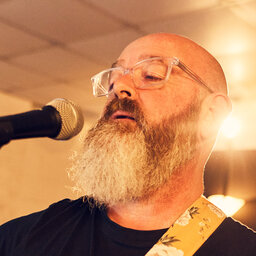

press kit
The Cinderlarks’ music is all original, atmospheric, lyrical with intricate guitar work, bursts of art-rock, soaring choruses and heartfelt emotions.
For fans of alt, indie, pop, rock.
Think of QOTSA, XTC and Turin Brakes.
listen closerAbout
The band was formed in 2025 by singer-songwriter Joe Chetcuti. Joe wanted to bring greater depth and texture to the sound of his songs through a full band, leaning on a love of everything from Bowie, Costello, Nick Drake, The Cure and Radiohead to This is the Kit, White Denim and Queens of the Stone Age.
The band formed around a nucleus of exceptional individual musicians with broad and eclectic musical tastes.
-

Joe Chetcuti
Vocals & rhythm guitar
Aficionado of any great storytelling singers and bands such as Nick Drake, Jeff Buckley, Kate Bush and The Mountain Goats.
-
Rich Mooney
Lead guitar
Influenced by the intricate and melodic guitar work of George Harrison, Johnny Marr and John Squire and music from The Beatles and Kinks to Neil Young, The Smiths, The La’s and beyond.
-
Joe Heffer
Bass
Channelling the tight rhythmic lock, melody and funk influences of John Paul Jones.
-
Grzegorz Panczyk
Drums
Main influences include Carter Beauford, Jeff Hamilton, Oskar Podolski, Piotr “Stopa” Żyżelewicz and Maciej “Ślimak” Starosta and bands such as Dave Matthews Band, GoGo Penguin, Cut Capers and Lao Che.
Press photos
Click a photo to view it larger. For print-quality files, download the full-resolution originals.
Reels
Short reels, downloadable in 4K and social formats. Click a reel to open its download, or grab them all.
Logos
Logo files for posters, listings and press. The SVG, PDF and EPS files are true vectors — the lettering is outlined, so they scale to any size and need no fonts installed.


Tech spec
Stage plot, input list and backline requirements.
Anything else you need? Email contact@thecinderlarks.co.uk.